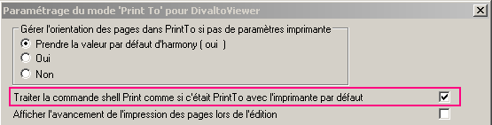
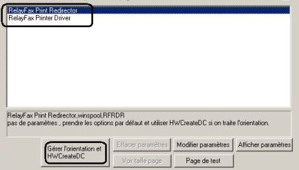
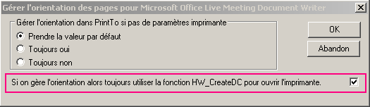

Le bouton OLE Fax et Com du choix Paramètres du menu Options de DivaltoViewer permet, en mode connecté, de spécifier si le service utilisé se situe sur le serveur d'applications distant Divalto.
Le logiciel d'émission de fax utilisé détermine le choix du type d'adresse parmi les suivants :
COMFAX:%ADR% ou COMFAX2:%ADR% (Service de télécopie de Windows 2003 serveur, onglet Fax ou Fax2).
MSFAX:%ADR% ou MSFAX2:%ADR% (Service de télécopie de Windows XP ou 2000, onglet Fax ou Fax2).
COMMAIL:%ADR% ou COMMAI2L:%ADR%
[FAX:%ADR%] (Exchange Server, Rte Fax, ...).
Pour les logiciels utilisant la couche de transport SMTP, tels que RelayFax ou Rte Fax 2008, voir le paragraphe Logiciels utilisant la couche SMTP.
Service de télécopie de Windows XP / 2000
A partir de Windows XP et 2000, on peut installer le service de télécopie qui se trouve sur le cdrom de Windows. Il suffit alors d’installer un modem fax et de le lier au service Fax de Windows. Dans DivaltoViewer, on peut utiliser ce service en positionnant le type d’adresse sur MSFAX:%ADR% ou MSFAX2:%ADR%. Harmony utilise alors l’interface Fax de Windows.
Modifiez le cas échéant le fichier paramètres Param_msfax.Txt pour personnaliser l'interface. Il contient des valeurs par défaut et les options à fournir au service Fax de Windows, comme par exemple :
Le nom de la page de garde à utiliser s’il y en a une (mot clé CcoverPage = xxx). Attention, il faut ici mettre le nom complet du fichier avec le chemin au format Windows.
Le nom et l’adresse de l’entreprise.
Remarque : cette interface ne fonctionne pas en mode serveur de fax. Il s’agit toujours d'un service fax local à la machine.
Le paramètre Server= du fichier param.msfax.Txt n’est donc pas opérationnel et doit être laissé vide.
Pour fonctionner en mode client/serveur, consultez le paragraphe Service de télécopie de Windows serveur 2003.
Le fichier param_msfax.Txt est cherché par défaut dans le répertoire de Divalto x:\Divalto\Sys.
Pour utiliser un autre fichier ou un autre chemin, modifiez la clé file=xxxxxx du chapitre [msfax] de Divalto.ini (xxxxxx doit être au format Windows). Par exemple :
[msfax]
file=\\serveur\partage\param_msfax.Txt
Vous pouvez utiliser xDivaltoIni.exe /propager afin de propager la modification de Divalto.ini sur tous les comptes utilisateur.
Avec le type d'adresse MSFAX2:%ADR%, c'est le fichier param_msfax2.Txt qui sert au paramétrage.
Nota : ce fichier n’est pas livré, il suffit simplement d'y copier le contenu de param_msfax.Txt.
Service de télécopie de Windows serveur 2003
Windows serveur 2003 propose aussi un service de télécopie. Mais contrairement au service Fax de Windows XP, ce service est accessible depuis toutes les machines connectées au réseau (à condition de partager le service de télécopie et de paramétrer les droits adéquats pour les postes concernés).
Dans DivaltoViewer, il faut alors utiliser le type d’adresse COMFAX:%ADR% ou COMFAX2:%ADR%. L'interface utilise l’objet COM du service de télécopie, à travers des commandes OLE Automation.
Modifiez le cas échéant le fichier paramètres Param_comfax.Txt pour personnaliser l'interface. Ce fichier contient des valeurs par défaut et les options à fournir au serveur de fax, comme par exemple :
Le nom de la page de garde à utiliser s’il y en a une (mot clé CcoverPage = xxx). Attention, il faut ici mettre le nom complet du fichier avec le chemin au format Windows.
Le nom et l’adresse de l’entreprise.
Le paramètre Server= doit ici être renseigné avec le chemin réseau du serveur de fax.
Par exemple : server=\\mon_serveur_de_fax_2003.
La ligne File= contient le nom d'un fichier de commandes OLE Automation (ole_comfax.Txt par défaut). Ce fichier contient les ordres OLE permettant de se connecter au serveur 2003.
Si vous désirez changer le nom ou le chemin de ce fichier, modifiez la clé file=xxxxxx du chapitre [comfax] de Divalto.ini (xxxxxx doit être au format Windows). Par exemple :
[comfax]
file=\\serveur\partage\param_comfax.Txt
Vous pouvez utiliser xDivaltoIni.exe /propager afin de propager la modification de Divalto.ini sur tous les comptes utilisateur.
Avec le type d'adresse COMFAX2:%ADR%, c'est le fichier param_comfax2.Txt qui sert au paramétrage.
Nota : ce fichier n’est pas livré, il suffit simplement d'y copier le contenu de param_comfax.Txt.
Logiciels utilisant la couche SMTP (RelayFax, Rte Fax 2008, ...)
Pour envoyer un FAX par e-mail, on dispose de deux types de format (NNNNNNNNNN représente le numéro de téléphone) :
Avec le format du type "NNNNNNNNNN" <fax@societe.local>
le format dans Divalto sera : "%ADR%" fax@societe.local
Avec le format du type NNNNNNNNNN@fax.societe.local
le format dans Divalto sera : %ADR%@fax.societe.local
Logiciel RelayFax
Le logiciel RelayFax (voir paragraphe précédent) comporte les particularités supplémentaires suivantes :
Commandes du shell Print To et Print
Lorsqu’un logiciel de fax doit émettre un fichier (en provenance par exemple de Word, Excel ou Divalto), il a besoin que le "propriétaire" du fichier lui fournisse l’image de chaque page à faxer. Pour cela, il cherche dans la base de registres le programme associé à l'extension du ficher, le lance et lui envoie la commande PrintTo.
Lorsque vous installez Divalto, DivaltoViewer s’inscrit dans la base de registres comme étant le programme d'édition des fichiers de type .dhvw (.hvw en version 5) et comme traitant la commande PrintTo. Ainsi, DivaltoViewer permet l’édition de ce type de fichiers vers l’imprimante virtuelle dédiée au logiciel de fax.
Mais attention, certains logiciels de fax (comme RelayFax) n’envoient pas la commande PrintTo mais la commande Print (normalement utilisée à d’autres fins). Dans ce cas, procédez comme suit :
Appelez l'utilitaire xDivaltoPrinters.exe.
Sélectionnez l'imprimante concernée.
Cliquez sur le bouton Paramètres Print To.
Activez l'option Traiter la commande shell Print comme si c'était PrintTo avec l'imprimante par défaut.

Mode portrait et mode paysage
Les éditions Divalto peuvent se faire soit en mode portrait soit en mode paysage. Si vous utilisez le logiciel RelayFax qui ne traite que le mode portrait, procédez comme suit :
Appelez l'utilitaire xDivaltoPrinters.exe.
Sélectionnez l'imprimante concernée.
Cliquez sur le bouton Paramètres Print To.
Pour chacune des deux imprimantes RelayFax (il y a deux modes pour ouvrir ce type d’imprimante virtuelle), cliquez sur le bouton Gérer l'orientation et HWCreateDC et activez l'option Si on gère l'orientation alors toujours utiliser la fonction HW_CreateDC pour ouvrir l'imprimante.

